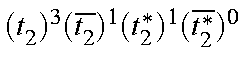

The microstates used by MECI are normally generated by use of a permutation operator. When individually defined microstates are desired, then MICROS=n can be used, where n defines the number of microstates to be read in.
After the geometry data and any symmetry data are read in, data defining each microstate is read in, using format 20I1, at one microstate per line. The microstate data is preceded by the word "MICROS" on a line by itself. Examples of microstates for two electrons in two M.O.s are given in the Table.
|
Microstate |
No. of alpha |
beta electrons |
MS |
State |
|
1100 |
2 |
0 |
1 |
Triplet |
|
1010 |
1 |
1 |
0 |
Singlet |
|
1001 |
1 |
1 |
0 |
Mixed |
|
0110 |
1 |
1 |
0 |
Mixed |
|
0101 |
1 |
1 |
0 |
Singlet |
|
0011 |
0 |
2 |
-1 |
Triplet |
For a system with n M.O.s in the C.I. (use OPEN=(m,n) or C.I.=n to do this), the populations of the n alpha M.O.s are defined, followed by the n beta M.O.s. Allowed occupancies are zero and one. For n=6 the closed-shell ground state would be defined as 111000111000, meaning one electron in each of the first three alpha M.O.s, and one electron in each of the first three beta M.O.s.
Users are warned that they are responsible for completing any spin manifolds. Thus, while the state 111100110000 is a triplet state with component of spin = 1, the state 111000110100, while having a component of spin MS = 0, is neither a singlet nor a triplet. In order to complete the spin manifold the microstate 110100111000 must also be included.
If a manifold of spin states is not complete, then the eigenstates of the spin operator will not be quantized.
There are two other limitations on possible microstates. First, the number of electrons in every microstate should be the same. If they differ, a warning message will be printed, and the calculation continued, but the results will almost certainly be nonsense. Second, the component of spin for every microstate must be the same, except for teaching purposes. Two microstates of different components of spin will have a zero matrix element connecting them. No warning will be given as this is a reasonable operation in a teaching situation. For example, if all states arising from two electrons in two levels are to be calculated, say for teaching Russell-Saunders coupling, then the microstates given in the Table would be used.
Constraints on the space manifold are just as rigorous, but much easier to satisfy. If the energy levels are degenerate, then all components of a manifold of degenerate M.O.s should be either included or excluded. If only some, but not all, components are used, the required degeneracy of the states will be missing.
As an example, for the tetrahedral methane cation, if the user supplies the microstates corresponding to a component of spin MS = 3/2, neglecting Jahn-Teller distortion, the minimum number of states that can be supplied is 90 = (6!/(1!5!))(6!/(4!2!)). This corresponds to the configuration .
The format is defined as 20I1 so that spaces can be used for empty M.O.s.
Example of MICROS:
OPEN(7,9) MECI charge=-1 micros=3 A transition-metal atom that has a filled alpha-d shell, one electron in the 4s level, and one electron in the 3p level Cr 0.00000000 0 0.0000000 0 0.0000000 0 0.0000 MICROS 111111100000000000 111111010000000000 111111001000000000